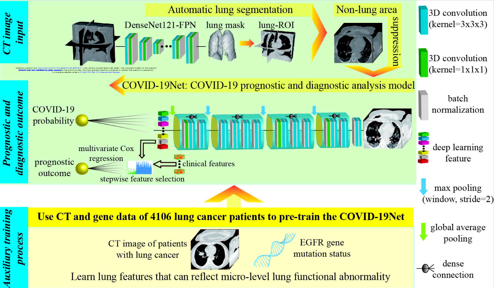
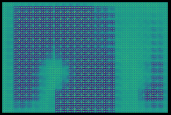

3.4 ERSCovid
Authors: Bartlomiej Eljasiak, Tomasz Krupiński, Dominik Pawlak
3.4.1 Abstract
In the sections below we take a close look at the ERSCovid model that was proposed in article (S. Wang et al. 2020b) from March 2020. We present some of our steps in unsuccessful reproduction of said model and further explain the problems with it, our limitations and currently unresolved bottlenecks in training a 3D CNN.
3.4.2 Problem
The aim of the original article was to create an automatic system that would make it easier to separate patients with COVID-19 lung disease from other pneumonia. At the time of creating this article it was still a very new and important topic, thus creating a similar system was of the highest priorities and potentially could influence many lives. Authors combined two deep learning (DL) models which were used to first process the lung computed tomography scans (CT scans) and then based on those processed files predict if the given person’s illness was due to COVID-19 virus or other types of pneumonia. We focused on the already ill people because in the beginning of 2020 it was necessary to show definitive symptoms of pneumonia in order to get screening for COVID-19, so our normal type of patient switched from healthy to already ill.
3.4.3 ERSCovid workflow
Authors presented 2 separate DL models which when combined by some script or pipeline should in theory create a fully automated system. However, networks aren’t connected and require extra 3D-scan processing in between, thus making the whole process tedious and requiring advanced technical knowledge. To further explain those statements one should look closely at the proposed two networks. Image below originates from the paper, and it shows both the networks with the type of layers they used, but sadly not their sizes. It also shows an extra step of simple prognosis answering the question will the patient have to stay longer in the hospital. Sadly this step used clinical features which we did not have in our data, due to this and the fact that the authors treated it like a bonus, we focused on the two neural networks.

3.4.3.1 Lung segmentation
Typical CT scan will be of size 512x512xZ, where Z corresponds to the depth of the scan i.e. first numbers show top slices of the lungs, and last ones the part at the bottom. Whereas resolution 512x512 is a well established standard of single CT image, their number (Z) varies a lot. From about 30 up to 150. This causes some problems in the proposed system, but they will be discussed later. CT scans show insides of the body, therefore a lot of unimportant information is contained within those images, this creates a sort of noise for neural networks and makes the learning process significantly harder. Ideally we would only want to keep the data about lungs, because all predictive variables are contained within them. This is exactly what the first DL model does. It is called DenseNet121-FPN and authors did not create it, they only used it to preprocess the data. It takes a single CT scan and outputs a mask with Z-2 number of layers. Why Z-2 and not Z or Z minus the number of layers without lungs? We honestly don’t know. This mask shows the area in the original picture where the lungs are located. What’s interesting, the value corresponding to lung presence is not binary, but a float, so authors use a threshold to determine which values mark the positive lung presence.
3.4.3.2 Transforming the data for second network
At this point we only have the original scan of size 512x512xZ and a mask 512x512xZ-2, but our second NN uses data of fixed size 240x360x48 for classifying patients. So how do they transfer this data? They do not tell. This makes reproduction of their steps a lot harder, because they do not use masks as is, they enlarge the area it contains in order to include tissue of the lungs in the output. How much tissue, by what padding did they add? Again, they do not include this information neither in the article, in supplementary materials nor in code. What we did at this point was simple: we just used the mask as is and scaled the scans using nearest-neighbor interpolation to the correct size. This step should not be repeated due to the fact that a lot of information can be lost here, but other areas of reproduction failed in even more spectacular ways, so we never returned here to improve on this.
3.4.3.3 Classifying patients
After all the previous steps the proposed 3D Convolutional Neural Network (CNN) can finally be used. It’s inputs are 240x360x48 CT scans of mostly lung area. The output of this network is a float number which can be associated with the certainty that provided lungs are from COVID-19 virus infected patient, whereas 1 indicates 100% assurance of such a case and 0 corresponds to 100% assurance that the patient has another type of pneumonia. Normally at this point there would be a detailed description of training process, loss function and usage of various special structures (e.g. dropout layers). Authors did mention few things about this step in supplementary materials, but not much other than learning rate of Stochastic Gradient Descent and regularization term. Nothing was said about improving the accuracy, fighting overfitting, or in general importance and impact of every step they took. We are just left with information that this network works with AUC of 0.87 and accuracy 78% on “validation dataset” which we hope is in fact a testing dataset and not validation used during training.
3.4.4 Data
3.4.4.1 Original data
The data the authors used was medical information (CT scans) from patients in seven different cities in China. Of course, these scans were obtained with the consent of the patients. In total, the authors write that they had 4106 scans with lung cancer and EFGR gene mutation information which they used to perform COVID-19Net pre-training for lung features. To train specifically for COVID-19 detection, they used 709 CT scans from Wuhan city and Henan. Validation data were generated from the other cities, of which there are four in total.
COVID-19 scans had to meet the following requirements:
- RT-PCR confirmed COVID-19
- lab-confirmed other types of pneumonia before Dec. 2019
- have non-contrast enhanced chest CT at diagnosis time
And CT-EGFR dataset had to meet the following criteria: * epidermal growth factor receptor (EGFR) gene sequencing was obtained * non-contrast enhanced chest CT data obtained within 4 weeks before EGFR gene sequencing.

Unfortunately, the datasets used by the authors were not posted nor could we find them. Had we had them, we could have checked the reproducibility of the results in more detail.
3.4.4.2 Our data
In order to be able to start checking reproducibility at all, we first had to find some data related to COVID-19. So we found four different collections available on the Internet:
- 120 (Desai 2020)
- 120 (Simpson Tsai E. 2020)
- 256 (Simpson Tsai E. B. 2021)
- 377 (Rahimzadeh et al. 2021)
However, we decided to use only the last collection, from which we took 377 lung scans. There are 15589 CT scans belonging to 95 Covid-19, and 48260 CT scans of 282 normal people from Negin medical center that is located at Sari, Iran. Those radiology images were in 16-bit grayscale DICOM format with 512x512 pixels resolution, but to preserve patient’s anonymity this dataset authors converted them to TIFF format, which holds the same 16-bit grayscale data. We used the 377 sample dataset because after preprocessing it size was about 15 GB, which is a maximum a Google Drive can hold and we had to store our files there in order to run training on Google Colab, which was necessary due to the fact that only one person in our team was able to run the network locally, although with batch size of one, which again is not great for training.
3.4.5 Training
The authors unfortunately did not provide the code related to network training. We therefore had to write our own code. As this project was our first contact with convolutional neural networks and with libraries related to neural networks in general, it is possible that this was not the optimal code. First, we wrote a simple training that was designed to simply work. Since one person on our team had an RTX series card, we were able to use Nvidia CUDA which helped train the network much faster. Unfortunately, due to other limitations such as RAM, we had to change our approach and decided to write a workout that would run on Google Collab, where we would be able to use the GPU available there. This allowed us to train a little faster. Unfortunately, despite these efforts, we still did not manage to write the code nor obtain the technical solutions that would enable us to train the network to satisfactory results.
3.4.6 Changes to original model
Part of work that we had to do unconditionally was to test two predefined modifications to our network. Dropout and normalization are popular techniques, which are very useful in fighting overfitting or in other words improving generalization of a model. The problem was that our model behaved mostly random e.g. in the last epochs it jumped from 0.6 AUC to 0.83 in the next, and right after back to 0.7. This is the default behavior of our network, so it was hard to tell what it exactly does but we definitely were not at the point where we would fight overfitting. Nevertheless we did test those modifications.
3.4.6.1 Dropout
This was something that for sure was missing from the original model. Adding a dropout with rate 0.7 after convolutional blocks that authors used seemed to reduce the variance of jumps between epochs, but it also reduced AUC by about 15%, the question still stands could we get better results on training data with in on fully trained model, but due to the lack of it we were not able to answer it.
3.4.6.2 Regularization
We tried to improve the results with the usage of regularization. This technique was already used by the authors of the article, but with no explanation for the used rate of 5 * 1e-4 for L1 regularization. We tried a few settings on our training data, first we ran the original network then we introduced L1 and later L2 with rates 1e-2 and 1e-3. Unfortunately neither of them worked well. Our results got drastically worse, dropping by roughly 0.35 AUC, in comparison to the version of the author’s network trained by us, which had 0.72 AUC. As this is an important parameter while training a neural network, we would love to test a variety of them on trained networks. But again, at this point we were not fighting overfitting, and our current problems were not caused by the wrong regularization parameter, so we moved on to the next thing.
3.4.6.3 Auxiliary training
The authors used pre-train to teach the network lung features. To achieve that, they used a large CT-EGFR dataset (4106 3D scans). The aim of this process was to teach networks to predict EGFR gene mutation. We had the idea of using the scans of patients with various forms of lung cancer. This would make the network learn features of lungs that would be very useful in our original problem. At the same time 3d CT scans of cancer patients are considerably more available. Sadly we didn’t manage to test this idea, mostly because some of us had their Google Drives completely full already (it takes google some time to allow you to upload more data after you removed files from drive) and we were still trying to make use of more scans in our standard training process.
3.4.6.4 Creating new scans with GANs
One of the main struggles was lack of usable data, so naturally we looked for a way to overcome this problem. There is a technique of creating new, unseen data that utilizes Generative Adversarial Networks, which could prove very useful in this case. This section should not be focused on a deep explanation of what GAN exactly is, but not to leave some people in blind, here is a short description. In summary the typical GAN consists of two networks which are trained simultaneously. Goal of the first (generator) is to create an image from randomly generated noise, and the second (discriminator) tries to tell which images were generated and which are real. This is because while training each generated image is given to the discriminator in pair with the real one, but with no information which is which. The training generator improves itself when the discriminator correctly indicates which image was generated and the discriminator learns when it makes mistakes while picking the generated image. This approach can be very efficient and is widely used in generating 2d images. Our plan was to start from a rather basic and light version in GAN, inspect results and improve our structure on them. Sadly creating even simple generative network of size even 240x360x48 proves to be computationally heavy. We were not able to train it locally due to it’s memory requirements, so we had to rely upon online GPUs of Google Colab. All seems to work fine, but training our small basic 3D GAN on our small dataset of 377 CT scans for 20 epochs was said to take around 10h, this would still be doable if not for limitations of google colab, which quickly shut our access to resources down, which not only literally killed our all hopes for training this GAN, but for few days made it impossible for most of our team to train even the original 3D CNN, due to the fact, that original network was also to large for us to run it locally. But it was not a complete failure. Training process was halted roughly after 5 hours, and we were able to inspect what it did create at the last epoch. Image shows 24’th of 48 layers.

So we were not able to test even the very simple GAN, which honestly would probably perform badly. If we used a more appropriate, larger dataset and more complex structure, training would probably last a couple of months or years. This is not really surprising, due to the fact that recent state-of-the-art fully 3D GAN was creating models of size 32x32x32, and they used a cluster of TITANs GPUs.
3.4.7 Summary
While working on this project we have taken a deep dive into a world of neural networks. Despite the fact that we didn’t manage to introduce any improvements to the given problem, we are satisfied with the results of our work. We learned about convolutional neural networks and how versatile they might be. The article above shows up to date real-life use cases of using CNN in medicine. We were able to reproduce, modify and understand the network from said article, which gave an uncanny insight into doing our own research. We would love to tackle this problem again in the future.